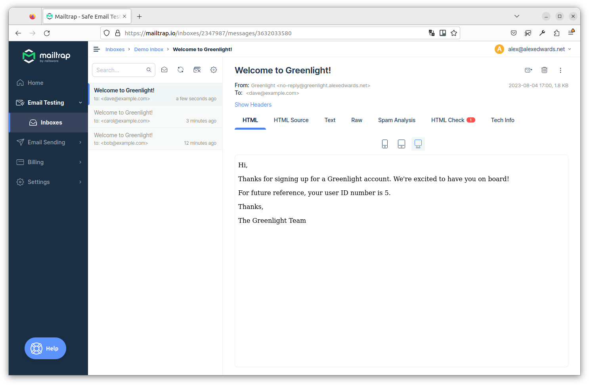

ارسال ایمیلهای پسزمینه
همانطور که به طور خلاصه در فصل قبل ذکر کردیم، ارسال ایمیل خوشآمدگویی از متد registerUserHandler تأخیر زیادی به زمان کل رفت و برگشت درخواست/پاسخ برای کلاینت اضافه میکند.
یکی از راههای کاهش این تأخیر، ارسال ایمیل در یک background goroutine است. این کار به طور مؤثری وظیفه ارسال ایمیل را از بقیه کدهای registerUserHandler ما جداسازی (decouple) میکند و به این معنی است که میتوانیم یک پاسخ HTTP به کلاینت بازگردانیم بدون اینکه منتظر اتمام ارسال ایمیل باشیم.
در سادهترین حالت ممکن، میتوانیم هندلر خود را طوری تطبیق دهیم که ارسال ایمیل را در یک background goroutine به این صورت اجرا کند:
package main ... func (app *application) registerUserHandler(w http.ResponseWriter, r *http.Request) { ... // Launch a goroutine which runs an anonymous function that sends the welcome email. go func() { err := app.mailer.Send(user.Email, "user_welcome.tmpl", user) if err != nil { // Importantly, if there is an error sending the email then we use the // app.logger.Error() helper to manage it, instead of the // app.serverErrorResponse() helper like before. app.logger.Error(err.Error()) } }() // Note that we also change this to send the client a 202 Accepted status code. // This status code indicates that the request has been accepted for processing, but // the processing has not yet been completed. err = app.writeJSON(w, http.StatusAccepted, envelope{"user": user}, nil) if err != nil { app.serverErrorResponse(w, r, err) } }
وقتی این کد اکنون اجرا میشود، یک background goroutine جدید برای ارسال ایمیل خوشآمدگویی راهاندازی میشود. کد در این background goroutine به صورت همزمان (concurrently) با کدهای بعدی در registerUserHandler ما اجرا میشود، که به این معنی است که دیگر منتظر ارسال ایمیل نمیمانیم تا یک پاسخ JSON به کلاینت بازگردانیم. به احتمال زیاد، background goroutine هنوز در حال اجرای کد خود خواهد بود حتی پس از اینکه registerUserHandler بازگشت کرده باشد.
چند نکته وجود دارد که میخواهم اینجا به آنها تأکید کنم:
ما از متد
app.logger.Error()برای مدیریت هرگونه خطا درbackground goroutineخود استفاده میکنیم. دلیل این امر این است که تا زمانی که ما با خطاها مواجه میشویم، احتمالاً قبلاً یک پاسخ202 Acceptedتوسط helperwriteJSON()ما برای کلاینت ارسال شده است.توجه داشته باشید که نمیخواهیم از helper
app.serverErrorResponse()برای مدیریت هرگونه خطا درbackground goroutineخود استفاده کنیم، زیرا این امر باعث میشود ما سعی کنیم یک پاسخ HTTP دوم بنویسیم و خطای"http: superfluous response.WriteHeader call"را ازhttp.Serverخود در زمان اجرا دریافت کنیم.کدی که در
background goroutineاجرا میشود، یک closure روی متغیرهایuserوappتشکیل میدهد. مهم است که بدانید این متغیرهای «بسته شده» (closed over) در محدودهbackground goroutineنیستند، به این معنی که هرگونه تغییری که در آنها ایجاد کنید در بقیه پایگاه کد شما منعکس خواهد شد. برای یک مثال ساده از این مورد، کد زیر را در playground ببینید.در مورد ما، ما به هیچ وجه مقدار این متغیرها را تغییر نمیدهیم، بنابراین این رفتار مشکلی برای ما ایجاد نمیکند. اما مهم است که این نکته را در ذهن داشته باشید.
خب، بیایید آن را امتحان کنیم!
API را ریستارت کنید، سپس یک کاربر جدید دیگر با آدرس ایمیل carol@example.com ثبت نام کنید. به این صورت:
$ BODY='{"name": "Carol Smith", "email": "carol@example.com", "password": "pa55word"}'
$ curl -w '\nTime: %{time_total}\n' -d "$BODY" localhost:4000/v1/users
{
"user": {
"id": 4,
"created_at": "2021-04-11T21:21:12+02:00",
"name": "Carol Smith",
"email": "carol@example.com",
"activated": false
}
}
Time: 0.268639
این بار باید ببینید که زمان لازم برای بازگرداندن پاسخ بسیار سریعتر شده است — در مورد من ۰.۲۷ ثانیه در مقایسه با ۲.۳۳ ثانیه قبلی.
و اگر به صندوق ورودی Mailtrap خود نگاه کنید، باید ببینید که ایمیل برای carol@example.com به درستی ارسال شده است. به این صورت:
بازیابی panic
مهم است که در نظر داشته باشید که هر panic که در این background goroutine رخ میدهد توسط middleware recoverPanic() ما یا http.Server زبان Go به طور خودکار بازیابی نمیشود و باعث خاتمه کل برنامه ما میشود.
در background goroutineهای بسیار ساده این نگرانی کمتر است. اما کدی که در ارسال ایمیل دخیل است بسیار پیچیده است (شامل فراخوانیهای به پکیجهای third-party) و خطر panic در زمان اجرا قابل توجه است. بنابراین باید مطمئن شویم که هر panic در این background goroutine به صورت دستی بازیابی شود، با استفاده از الگویی مشابه آنچه در middleware recoverPanic() ما وجود دارد.
من نشان خواهم داد.
فایل cmd/api/users.go خود را مجدداً باز کنید و registerUserHandler را به این صورت بهروز کنید:
package main import ( "errors" "fmt" // New import "net/http" "greenlight.alexedwards.net/internal/data" "greenlight.alexedwards.net/internal/validator" ) func (app *application) registerUserHandler(w http.ResponseWriter, r *http.Request) { ... // Launch a background goroutine to send the welcome email. go func() { // Run a deferred function which uses recover() to catch any panic, and log an // error message instead of terminating the application. defer func() { pv := recover() if pv != nil { app.logger.Error(fmt.Sprintf("%v", pv)) } }() // Send the welcome email. err := app.mailer.Send(user.Email, "user_welcome.tmpl", user) if err != nil { app.logger.Error(err.Error()) } }() err = app.writeJSON(w, http.StatusAccepted, envelope{"user": user}, nil) if err != nil { app.serverErrorResponse(w, r, err) } }
استفاده از یک تابع کمکی
اگر نیاز دارید تعداد زیادی از وظایف پسزمینه را در برنامه خود اجرا کنید، تکرار مکرر کد بازیابی panic میتواند خستهکننده باشد — و این خطر وجود دارد که ممکن است فراموش کنید آن را به طور کامل وارد کنید.
برای کمک به رسیدگی به این موضوع، میتوان یک تابع کمکی ساده ایجاد کرد که منطق بازیابی panic را در خود بپیچد. اگر در حال دنبال کردن مراحل هستید، فایل cmd/api/helpers.go خود را باز کنید و یک متد کمکی background() جدید به شرح زیر ایجاد کنید:
package main ... // The background() helper accepts an arbitrary function as a parameter. func (app *application) background(fn func()) { // Launch a background goroutine. go func() { // Recover any panic. defer func() { pv := recover() if pv != nil { app.logger.Error(fmt.Sprintf("%v", pv)) } }() // Execute the arbitrary function that we passed as the parameter. fn() }() }
این helper background() از این واقعیت بهره میبرد که زبان Go دارای توابع درجه اول (first-class functions) است، به این معنی که توابع میتوانند به متغیرها اختصاص داده شوند و به عنوان پارامتر به توابع دیگر ارسال شوند.
در این مورد، ما helper background() را طوری تنظیم کردهایم که هر تابعی با امضای func() را به عنوان پارامتر بپذیرد و آن را در متغیر fn ذخیره کند. سپس یک background goroutine راهاندازی میکند، از یک تابع deferred برای بازیابی panicها و ثبت خطا استفاده میکند و سپس خود تابع را با فراخوانی fn() اجرا میکند.
حالا که این مورد در جای خود قرار گرفته است، بیایید registerUserHandler خود را به این صورت بهروز کنیم تا از آن استفاده کند:
package main import ( "errors" "net/http" "greenlight.alexedwards.net/internal/data" "greenlight.alexedwards.net/internal/validator" ) func (app *application) registerUserHandler(w http.ResponseWriter, r *http.Request) { ... // Use the background helper to execute an anonymous function that sends the welcome // email. app.background(func() { err := app.mailer.Send(user.Email, "user_welcome.tmpl", user) if err != nil { app.logger.Error(err.Error()) } }) err = app.writeJSON(w, http.StatusAccepted, envelope{"user": user}, nil) if err != nil { app.serverErrorResponse(w, r, err) } }
بیایید دوباره بررسی کنیم که آیا هنوز کار میکند. API را ریستارت کنید، سپس یک کاربر جدید دیگر با آدرس ایمیل dave@example.com ایجاد کنید:
$ BODY='{"name": "Dave Smith", "email": "dave@example.com", "password": "pa55word"}'
$ curl -w '\nTime: %{time_total}\n' -d "$BODY" localhost:4000/v1/users
{
"user": {
"id": 5,
"created_at": "2021-04-11T21:33:07+02:00",
"name": "Dave Smith",
"email": "dave@example.com",
"activated": false
}
}
Time: 0.267692
اگر همه چیز به درستی تنظیم شده باشد، اکنون باید ایمیل مربوطه را دوباره در صندوق ورودی Mailtrap خود ببینید.
